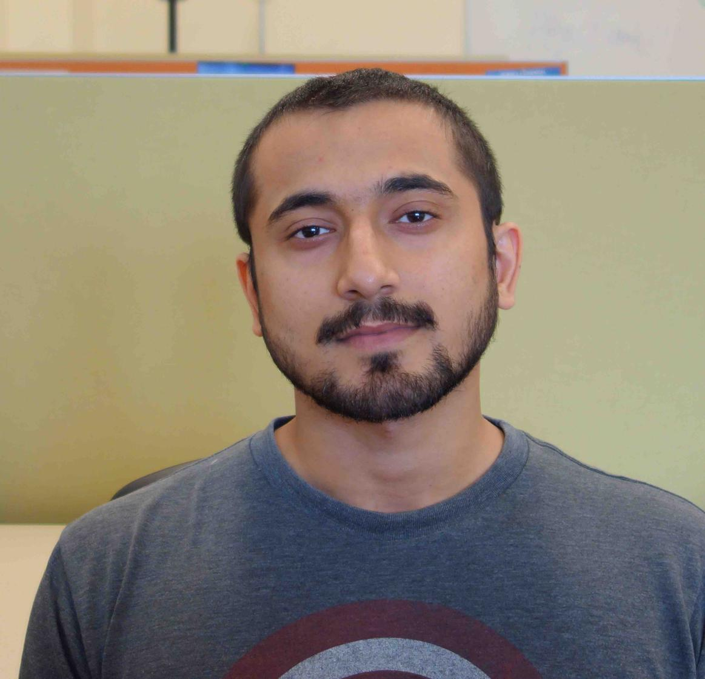

Itinderjot Singh, PhD
Postdoctoral Fellow, Department of Atmospheric Science
Colorado State University
I work on the NASA INCUS (INvestigation of Convective UpdraftS) mission, combining high-resolution numerical simulations of deep moist convection with satellite radar observations.
Research interests
- Convective updraft dynamics: theory, modeling, and satellite observations
- Numerical weather prediction
- Spatial variability and scaling of atmospheric fields
- Convection initiation and precipitation over complex terrain
- Deep convection-synoptic wave interactions